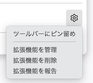

TimeDripper
インストールありがとうございます。
ご利用の際は、ツールバーにTimeDripperのアイコンをピン留めすることをおすすめします。
ツールバーの拡張機能アイコン をクリックすると、拡張機能の一覧が表示されますので、TimeDripperを見つけて、右端の歯車アイコンのメニューから "ツールバーにピン留め" を選択してください。
アイコンを表示しておくと
-
おおよその残り時間がだいたいわかります。
- いま表示されているサイトが制限時間を消費しているかどうかがわかります。
ON OFF -
設定で “Display remaining time on badge” をチェックすれば残り時間がバッジに表示されます。
アイコンをクリックすると、設定を編集することができます。
- サイト
- Block list 制限時間の対象となるサイトです。「*」をワイルドカードとして使うことができます。
- Allow list 制限時間の対象とならないサイトです。Block listよりもこちらが優先されます。
- 設定
- Max Quota 制限時間の最大値です。この時間をこえて閲覧時間が回復することはありません。
- Recovery Interval 制限時間が回復する間隔です。
- Recovery Amount 制限時間が回復する量です。
たとえば、
- Max Quota = 10分
- Recovery Interval = 6分
- Recovery Amount = 1分
という設定にした場合、6分ごとに制限時間が1分回復します。そして、空っぽの状態から1時間経過すると満タンの10分がチャージされます。あなたのライフスタイルや生活リズムに合わせていろいろな設定を試してみてください。